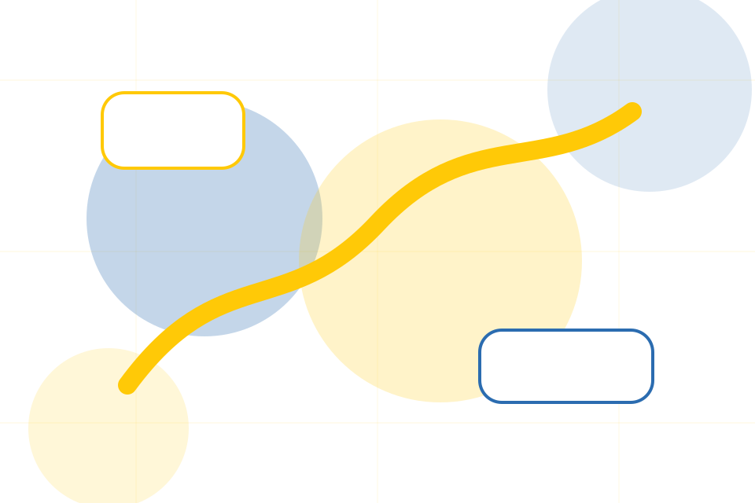
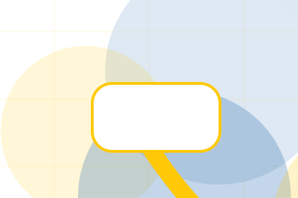
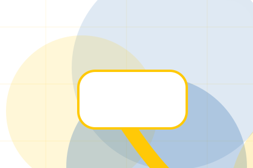
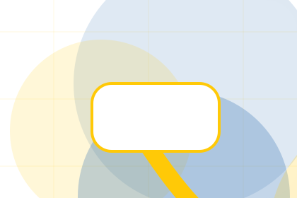
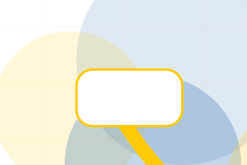
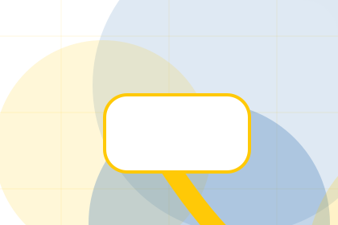
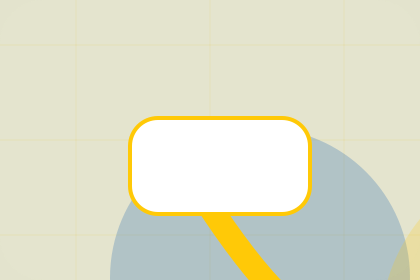

Programs / 01
Programs by Good
Programs shaped for nonprofit, charity & social impact decisions.
Programs opens as a clear nonprofit decision hub: what Good offers, who it helps, why it matters, and which route to take first.
The first screen combines positioning, proof, primary action, and fast internal navigation, so people can act immediately or compare the rest of the programs route with context.
Nonprofit scopeCompare optionsRequest advice
Yellow impact hero
Choose an impact route
Select the closest route and Good keeps the next step, proof, and follow-up expectation aligned with trust and contribution.

Programs / 03
Education
Education explains the practical scope, best-fit situations, and expected outcome so nonprofit visitors can compare options without decoding jargon.
The section keeps the offer concrete: what is included, who it is best for, what decision it supports, and which linked route gives the deeper detail.
Explore ProgramsBest Fit
Who should use education and when it belongs in the programs journey.
What Changes
The practical benefit visitors should expect after choosing this route.

Deeper Route
Where to compare details, pricing, support, or contact options before committing.
Programs / 04
Relief
Relief explains the practical scope, best-fit situations, and expected outcome so nonprofit visitors can compare options without decoding jargon.
The section keeps the offer concrete: what is included, who it is best for, what decision it supports, and which linked route gives the deeper detail.
Explore ProgramsWho should use relief and when it belongs in the programs journey.
The practical benefit visitors should expect after choosing this route.
Where to compare details, pricing, support, or contact options before committing.
Programs / 05
Advocacy
Advocacy explains the practical scope, best-fit situations, and expected outcome so nonprofit visitors can compare options without decoding jargon.
The section keeps the offer concrete: what is included, who it is best for, what decision it supports, and which linked route gives the deeper detail.
Explore Programs- 01
Best Fit
Who should use advocacy and when it belongs in the programs journey.
- 02
What Changes
The practical benefit visitors should expect after choosing this route.
- 03
Deeper Route
Where to compare details, pricing, support, or contact options before committing.
Programs / 06
Community
Community explains the practical scope, best-fit situations, and expected outcome so nonprofit visitors can compare options without decoding jargon.
The section keeps the offer concrete: what is included, who it is best for, what decision it supports, and which linked route gives the deeper detail.
Explore ProgramsGood structures community around best fit, what changes, and a clear next route so visitors can compare the block quickly before they donate today.
Donate TodayPrograms / 07
Activities
Activities explains the practical scope, best-fit situations, and expected outcome so nonprofit visitors can compare options without decoding jargon.
The section keeps the offer concrete: what is included, who it is best for, what decision it supports, and which linked route gives the deeper detail.
Explore Programs

Best Fit
Who should use activities and when it belongs in the programs journey.
Programs / 08
People
People explains the practical scope, best-fit situations, and expected outcome so nonprofit visitors can compare options without decoding jargon.
The section keeps the offer concrete: what is included, who it is best for, what decision it supports, and which linked route gives the deeper detail.
Explore ProgramsBest Fit
Who should use people and when it belongs in the programs journey.

What Changes
The practical benefit visitors should expect after choosing this route.

Deeper Route
Where to compare details, pricing, support, or contact options before committing.
Programs / 09
Join
Join explains the practical scope, best-fit situations, and expected outcome so nonprofit visitors can compare options without decoding jargon.
The section keeps the offer concrete: what is included, who it is best for, what decision it supports, and which linked route gives the deeper detail.
Explore ProgramsWho should use join and when it belongs in the programs journey.
The practical benefit visitors should expect after choosing this route.
Where to compare details, pricing, support, or contact options before committing.
Programs / 10
Donate Today
Good closes the programs route with a clear action, a quick reminder of the value, and a low-friction way to donate today.
Visitors who are ready can use the primary action. Visitors who are still comparing can scan the section links, proof, and support routes before they donate today.
Donate TodayThe final block keeps the choice simple: act now, compare one more proof route, or send enough detail for a focused response.
Donate Todaytrust and contribution
Donate Today
A donor site with bold yellow impact modules, transparent metrics, story cards, and donation selector. Programs ends with a direct path to donate today, plus enough context for visitors who still need to compare.

Donate TodayNotes
Donation use statements must match governance records, reporting, and local fundraising rules.